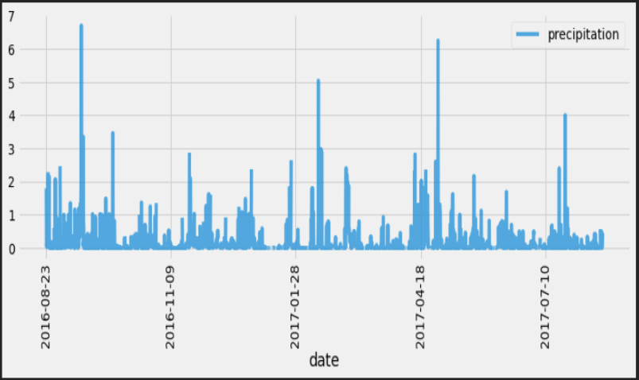
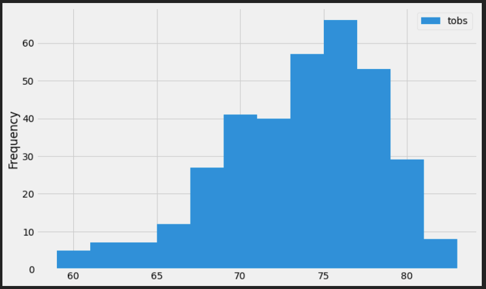
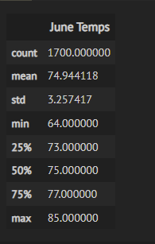
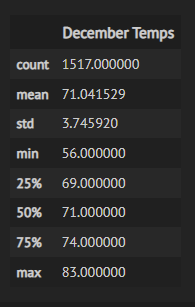
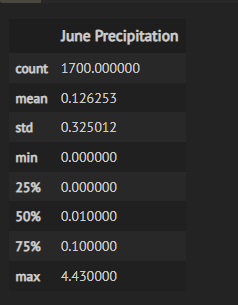
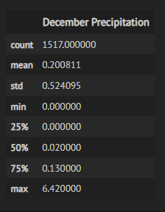
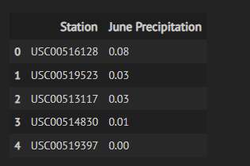
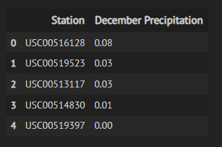
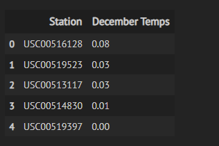
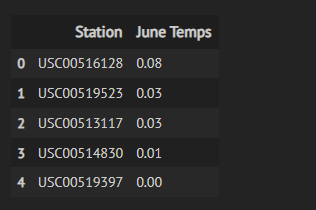

Comparing Weather Data For Two Months
The Surf_Up analysis seeks to analyze weather data for several years to determine if establishing a surfing business in Oahu is viable. In this analysis, we would utilize Jupyter notebook, SQLite database, and VSCode, where we will create our flask application to visualize the results of our analysis. In the second part of our analysis, we will produce queries that show summary statistics for weather parameters for June and December for multiple years. In the end, our analysis will show which months of the year and potentially which locations in Oahu are the best for opening a surfing and ice-cream business.
In the date range specified (August 2016 to October 2017), there were 9 active stations, the most active station with a count of 2272 records, recorded a maximum temperature of 85.0, a minumum temperature of 54.0, and an average temperature of 71.7. A histogram plot shows that the most ocurring temperature was around 76.0. One trend we can observe based on the precipitation plot is that some months have higher amounts of precipitation than others. This plot provides insights around months where we would expect precipitation to be less and thus be a a good time for the surfing and ice-cream business.
 Our temperarture summary statistics show that June typically has a higher mean temperature at 74.9 compared to December at 71.0. Where 50% of the temperatures recorded for June were above 75.0, median temperature for December was 71.0 June has a minimum temperature of 64.0 while December has a minimum temperature of 56.0
 Interpreting the June and December Temperature Results. Using a T-Test, we can detrmine if the mean temperature values are different for the two months. To do so, we have to define our Null and Alternate Hypothesis. Null Hypothesis: µjune = µdecember (the means of both populations are equal) Alternate Hypothesis: µjune ≠ µdecember (the means of both populations are not equal) It is Important to note, we are specifying that the population does not have equal variance passing along False for the equal_var parameter. We know this because both samples were taken from populations (june and december) with different standard deviations. Our T-Test show: P-Value:[4.19352984e-187] T-Statistic:[31.35503692] We have a very small P-value to reject the Null Hypothesis. This means even though the standard deviations between our June and December are similar (3.257417, 3.745920), the difference in the population mean is statistically significant to consider the month of June and December different in terms of temperature.
Summary Additional Query 1 Our additional query 1 provides summary statistics for June and December for precipitation
 Interpreting the June and December Precipitation Results Using a T-Test, we can detrmine if the mean precipitation values are different for the two months. To do so, we have to define our Null and Alternate Hypothesis. Null Hypothesis: µjune = µdecember (the means of both populations are equal) Alternate Hypothesis: µjune ≠ µdecember (the means of both populations are not equal) It is Important to note, we are specifying that the population does not have equal variance passing along False for the equal_var parameter. We know this because both samples were taken from populations (june and december) with different standard deviations. Our T-Test show: P-Value:[1.84738788e-06] T-Statistic:[-4.78090477] We have a very small P-value to reject the Null Hypothesis. This means even though the standard deviations between our June and December are similar (0.325012, 0.524095), the difference in the population mean is statistically significant to consider the month of June and December different in terms of precipitation.
Additional Query 2 Our additional query 2 provides insight into the top 5 stations that recorded the highest temperature and precipitation for the months of june and december
   Additionlly, we can add the latitude and longitude details of the each station, and translate them to actual locations, our query can illuminate the locations with the highest temperatures and precipitation and thus inform where to setup our surfing business.